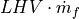

Combustion Chamber Tutorial¶
There are two different types of combustion chambers available:
Both can handle varying fluid compositions for the air and the fuel and
calculates the fluid composition of the flue gas. Thus, it is possible to e.g.
specify the oxygen mass fraction in the flue gas in a calculation. The
difference between the components lies in the fact, that the
CombustionChamber does not consider heat or pressure losses, while
DiabaticCombustionChamber does so. We provide a tutorial for both
components, where you learn how they work, and what the differences are.
CombustionChamber¶
The combustion chamber is an important component within thermal power plants, but unfortunately is the reason for many issues, as the solving algorithm is very sensitive to small changes e.g. the fluid composition. We will demonstrate how to handle the combustion chamber in a very small, simple example. You can download the full code from the tespy_examples repository.
First of all you need to define the network containing all fluid components used for the combustion chamber. These are at least the fuel, oxygen, carbon-dioxide and water. For this example we added Argon, and of course - as we are using Air for the combustion - Nitrogen.
from tespy.networks import Network
# define full fluid list for the network's variable space
fluid_list = ['Ar', 'N2', 'O2', 'CO2', 'CH4', 'H2O']
# define unit systems
nw = Network(fluids=fluid_list, p_unit='bar', T_unit='C')
As components there are two sources required, one for the fresh air, one for the fuel, a sink for the flue gas and the combustion chamber. Connect the components and add the connections to your network afterwards.
from tespy.components import Sink, Source, CombustionChamber
# sinks & sources
amb = Source('ambient')
sf = Source('fuel')
fg = Sink('flue gas outlet')
# combustion chamber
comb = CombustionChamber(label='combustion chamber')
from tespy.connections import Connection
amb_comb = Connection(amb, 'out1', comb, 'in1')
sf_comb = Connection(sf, 'out1', comb, 'in2')
comb_fg = Connection(comb, 'out1', fg, 'in1')
nw.add_conns(sf_comb, amb_comb, comb_fg)
For the parametrisation we specify the combustion chamber’s air to stoichiometric air ratio lamb and the thermal input (

).# set combustion chamber air to stoichiometric air ratio and thermal input
comb.set_attr(lamb=3, ti=2e6)
The ambient conditions as well as the fuel gas inlet temperature are defined in the next step. The air and the fuel gas composition must fully be stated, the component combustion chamber can not handle “Air” as input fluid!
# air from ambient (ambient pressure and temperature), air composition must
# be stated component wise.
amb_comb.set_attr(p=1, T=20, fluid={'Ar': 0.0129, 'N2': 0.7553, 'H2O': 0,
'CH4': 0, 'CO2': 0.0004, 'O2': 0.2314})
# fuel, pressure must not be stated, as pressure is the same at all inlets
# and outlets of the combustion chamber
sf_comb.set_attr(T=25, fluid={'CO2': 0.04, 'Ar': 0, 'N2': 0, 'O2': 0,
'H2O': 0, 'CH4': 0.96})
Finally run the code:
nw.solve('design')
nw.print_results()
Of course, you can change the parametrisation in any desired way. For example instead of stating the thermal input, you could choose any of the mass flows, or instead of the air to stoichiometric air ratio you could specify the flue gas temperature. It is also possible to make modifications on the fluid composition, for example stating the oxygen content in the flue gas or to change the fuel composition. Make sure, all desired fuels of your fuel mixture are also within the fluid_list of the network. For the example below we added hydrogen to the fuel mixture.
from tespy.networks import Network
from tespy.components import Sink, Source, CombustionChamber
from tespy.connections import Connection
# %% network
fluid_list = ['Ar', 'N2', 'O2', 'CO2', 'CH4', 'H2O', 'H2']
nw = Network(fluids=fluid_list, p_unit='bar', T_unit='C')
# %% components
# sinks & sources
amb = Source('ambient')
sf = Source('fuel')
fg = Sink('flue gas outlet')
# combustion chamber
comb = CombustionChamber(label='combustion chamber')
# %% connections
amb_comb = Connection(amb, 'out1', comb, 'in1')
sf_comb = Connection(sf, 'out1', comb, 'in2')
comb_fg = Connection(comb, 'out1', fg, 'in1')
nw.add_conns(sf_comb, amb_comb, comb_fg)
# %% component parameters
# set combustion chamber air to stoichometric air ratio and thermal input
comb.set_attr(lamb=3, ti=2e6)
# %% connection parameters
amb_comb.set_attr(p=1, T=20, fluid={'Ar': 0.0129, 'N2': 0.7553, 'H2O': 0,
'CH4': 0, 'CO2': 0.0004, 'O2': 0.2314,
'H2': 0})
sf_comb.set_attr(T=25, fluid={'CO2': 0, 'Ar': 0, 'N2': 0,'O2': 0, 'H2O': 0,
'CH4': 0.95, 'H2': 0.05})
# %% solving
nw.solve('design')
nw.print_results()
DiabaticCombustionChamber¶
The example for the diabatic combustion chamber can as well be taken from the tespy_examples repository.
The setup of the network, connections and components is identical to the
first setup, therefore we skip over that part in this section. Note, that
instead of CombustionChamber we are importing the component
DiabaticCombustionChamber. Since heat losses and pressure losses are
considered in this component, we have to make additional assumptions to
simulate it. First, we will make run the simulation with inputs in a way, that
the outcome is identical to the behavior of the adiabatic version without
pressure losses as described above.
As in the example above, we also specify thermal input and lambda, as well as
identical parameters for the connections. Furthermore, we specify the efficiency
eta of the component, which determines the heat loss as ratio of the
thermal input. eta=1 means, no heat losses, thus adiabatic behavior.
On top of that, we set the pressure ratio pr, which describes the
ratio of the pressure at the outlet to the pressure at the inlet 1. The
pressure value at the inlet 2 is detached from the other pressure values, it
must be a result of a different parameter specification. In this example, we
set it directly. To match the inputs of the first tutorial, we set
pr=1 and p=1 for connection sf_comb.
Note
A warning message is promted at the end of the simulation, if the pressure of the inlet 2 is lower or equal to the pressure of inlet 1.
from tespy.networks import Network
from tespy.components import Sink, Source, DiabaticCombustionChamber
from tespy.connections import Connection
# %% network
fluid_list = ['Ar', 'N2', 'O2', 'CO2', 'CH4', 'H2O', 'H2']
nw = Network(fluids=fluid_list, p_unit='bar', T_unit='C')
# %% components
# sinks & sources
amb = Source('ambient')
sf = Source('fuel')
fg = Sink('flue gas outlet')
# combustion chamber
comb = DiabaticCombustionChamber(label='combustion chamber')
# %% connections
amb_comb = Connection(amb, 'out1', comb, 'in1')
sf_comb = Connection(sf, 'out1', comb, 'in2')
comb_fg = Connection(comb, 'out1', fg, 'in1')
nw.add_conns(sf_comb, amb_comb, comb_fg)
# set combustion chamber air to stoichometric air ratio, thermal input
# and efficiency
comb.set_attr(lamb=3, ti=2e6, eta=1, pr=1)
# %% connection parameters
amb_comb.set_attr(p=1, T=20, fluid={'Ar': 0.0129, 'N2': 0.7553, 'H2O': 0,
'CH4': 0, 'CO2': 0.0004, 'O2': 0.2314,
'H2': 0})
sf_comb.set_attr(p=1, T=25, fluid={'CO2': 0, 'Ar': 0, 'N2': 0,'O2': 0,
'H2O': 0, 'CH4': 0.95, 'H2': 0.05})
# %% solving
nw.solve('design')
nw.print_results()
Now, consider heat loss of the surface of the component. This is simply done by
specifying the value for eta. We assume 4 % of thermal input as heat
loss and set that value accordingly. Furthermore, the pressure of the fuel is
set to 1.5 bar. The air inlet pressure will be the result of the specified
pressure ratio and the outlet pressure assuming 2 % pressure losses. All
other parameters stay untouched.
comb.set_attr(eta=0.96, pr=0.98)
amb_comb.set_attr(p=None)
sf_comb.set_attr(p=1.5)
comb_fg.set_attr(p=1.0)
nw.solve('design')
nw.print_results()